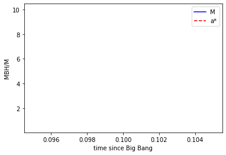
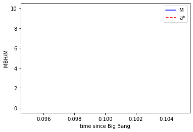

[7]:
import numpy as np
from scipy.integrate import odeint
import matplotlib.pyplot as plt
import math
def Jms_tilde_nixing(astar,M):
z1=1+math.pow(1-astar**2,1.0/3)*(math.pow(1+astar,1.0/3)+math.pow(1-astar,1.0/3))
z2=np.sqrt(3*astar**2+z1**2)
c=3e8
G=6.7e-11
a=astar*M*1.99e30
Rs=2*G*M/(c**2)*1.99e30
Rms=Rs/2*(3+z2+np.sqrt((3-z1)*(3+z1+z2*2)))
Jms=-1*(np.sqrt(M*1.99e30*Rms)*(Rms*Rms+2*a*np.sqrt(M*1.99e30*Rms)))/(Rms*np.sqrt(Rms*Rms-3*M*1.99e30*Rms-2*a*np.sqrt(M*1.99e30*Rms)))
Jms_tilde=Jms/(Rs*c)
return Jms_tilde
def Jms_tilde_shunxing(astar,M):
z1=1+math.pow(1-astar**2,1.0/3)*(math.pow(1+astar,1.0/3)+math.pow(1-astar,1.0/3))
z2=np.sqrt(3*astar**2+z1**2)
c=3e8
G=6.7e-11
a=astar*M*1.99e30
Rs=2*G*M/(c**2)*1.99e30
Rms=Rs/2*(3+z2-np.sqrt((3-z1)*(3+z1+z2*2)))
Jms=(np.sqrt(M*1.99e30*Rms)*(Rms*Rms-2*a*np.sqrt(M*1.99e30*Rms)))/(Rms*np.sqrt(Rms*Rms-3*M*1.99e30*Rms+2*a*np.sqrt(M*1.99e30*Rms)))
Jms_tilde=Jms/(Rs*c)
return Jms_tilde
def Ems_tilde_shunxing(astar,M):
z1=1+math.pow(1-astar**2,1.0/3)*(math.pow(1+astar,1.0/3)+math.pow(1-astar,1.0/3))
z2=np.sqrt(3*astar**2+z1**2)
c=3e8
G=6.7e-11
a=astar*M*1.99e30
Rs=2*G*M/(c**2)*1.99e30
Rms=Rs/2*(3+z2-np.sqrt((3-z1)*(3+z1+z2*2)))
Ems=(Rms*Rms-2*M*1.99e30*Rms+a*np.sqrt(M*1.99e30*Rms))/(Rms*np.sqrt(Rms*Rms-3*M*1.99e30*Rms+2*a*np.sqrt(M*1.99e30*Rms)))
Ems_tilde=Ems/(c*c)
return Ems_tilde
def Ems_tilde_nixing(astar,M):
z1=1+math.pow(1-astar**2,1.0/3)*(math.pow(1+astar,1.0/3)+math.pow(1-astar,1.0/3))
z2=np.sqrt(3*astar**2+z1**2)
c=3e8
G=6.7e-11
a=astar*M*1.99e30
Rs=2*G*M/(c**2)*1.99e30
Rms=Rs/2*(3+z2-np.sqrt((3-z1)*(3+z1+z2*2)))
Ems=(Rms*Rms-2*M*1.99e30*Rms-a*np.sqrt(M*1.99e30*Rms))/(Rms*np.sqrt(Rms*Rms-3*M*1.99e30*Rms-2*a*np.sqrt(M*1.99e30*Rms)))
Ems_tilde=Ems/(c*c)
return Ems_tilde
def M_BH_dot_value(lamda,Ems_tilde,M,fm):
c=3e8
M0_dot=lamda*1.3e38*M/(1-Ems_tilde)/c**2
M_BH_dot=(1+fm)*M0_dot
return M_BH_dot
def model(z,t):
lamda=0.5
fm=2
astar=z[1]
M=z[0]
Ems_tilde=Ems_tilde_shunxing(astar,M)
Jms_tilde=Jms_tilde_shunxing(astar,M)
M_BH_dot=M_BH_dot_value(lamda,Ems_tilde,M,fm)
dMdt=Ems_tilde*M_BH_dot
dastardt=2*M_BH_dot/(M*1.99e30)*(Jms_tilde-astar*Ems_tilde)
dzdt=[dMdt,dastardt]
print(dzdt)
return dzdt
# initial condition
z0 = [10,0.5]
# time points
t = np.logspace(-1,9,100)
# solve ODE
z = odeint(model,z0,t)
# plot results
plt.plot(t,z[:,0],'b-',label="M")
plt.plot(t,z[:,1],'r--',label="a*")
plt.ylabel('MBH/M')
plt.xlabel('time since Big Bang')
plt.legend(loc='best')
plt.show()
[-2.1718662218528496e+22, 49378667060387.19]
[-2.1715745890458317e+22, 49378667060316.84]
[-2.171574628205561e+22, 49378667060316.83]
[-2.171283034547757e+22, 49378667060246.54]
[-2.17128307370223e+22, 49378667060246.54]
[-2.1622817658099387e+22, 49378667058071.0]
[-2.162281726893516e+22, 49378667058070.98]
[-2.153317774059059e+22, 49378667055895.46]
[-2.1533176963871787e+22, 49378667055895.445]
[-2.144390904908911e+22, 49378667053719.89]
[-2.1443908275588724e+22, 49378667053719.91]
[-2.1063801650597794e+22, 49378667044353.73]
[-2.1063795908108546e+22, 49378667044353.72]
[-2.1162471399986427e+22, 49378667046801.195]
[-2.1162468220993226e+22, 49378667046801.2]
[-2.0884717794237725e+22, 49378667039882.5]
[-2.088472133455292e+22, 49378667039882.51]
[-2.0931474899630335e+22, 49378667041053.62]
[-2.0931477124826748e+22, 49378667041053.63]
[-2.070300739937528e+22, 49378667035305.99]
[-2.070300732791103e+22, 49378667035306.01]
[-2.0477031193420306e+22, 49378667029558.414]
[-2.0477031319802785e+22, 49378667029558.414]
[-2.0253521743098266e+22, 49378667023810.83]
[-2.0253521868202954e+22, 49378667023810.81]
[-1.981379462748587e+22, 49378667012315.63]
[-1.9813795217651744e+22, 49378667012315.63]
[-1.9383615818806174e+22, 49378667000820.445]
[-1.9383615480511116e+22, 49378667000820.45]
[-1.8962775808575057e+22, 49378666989325.27]
[-1.8962775468148747e+22, 49378666989325.266]
[-1.855107240264503e+22, 49378666977830.11]
[-1.8551072366338895e+22, 49378666977830.09]
[-1.814830783457309e+22, 49378666966334.88]
[-1.8148307797748344e+22, 49378666966334.9]
[-1.6836520005865195e+22, 49378666927043.81]
[-1.6836518185260819e+22, 49378666927043.83]
[-1.561954944686303e+22, 49378666887752.75]
[-1.5619547499924145e+22, 49378666887752.73]
[-1.4490536316282878e+22, 49378666848461.695]
[-1.4490541399203423e+22, 49378666848461.66]
[-1.4673518538881338e+22, 49378666855033.21]
[-1.4673521417622227e+22, 49378666855033.21]
[-1.378479350798382e+22, 49378666822313.69]
[-1.3784793035629423e+22, 49378666822313.68]
[-1.2949891509856965e+22, 49378666789594.13]
[-1.2949892159676084e+22, 49378666789594.13]
[-1.2165558277977049e+22, 49378666756874.62]
[-1.2165558533919278e+22, 49378666756874.625]
[-1.1428729226508657e+22, 49378666724155.07]
[-1.1428729501260173e+22, 49378666724155.07]
[-1.0736527578670079e+22, 49378666691435.53]
[-1.0736527849288481e+22, 49378666691435.54]
[-9.491656794983799e+21, 49378666626896.62]
[-9.491659353764812e+21, 49378666626896.61]
[-8.391123963206117e+21, 49378666562357.67]
[-8.391129063853246e+21, 49378666562357.67]
[-8.589723729782691e+21, 49378666574607.77]
[-8.589726440869096e+21, 49378666574607.766]
[-7.77350337851967e+21, 49378666522318.96]
[-7.773498633821734e+21, 49378666522318.94]
[-7.923705460537322e+21, 49378666532341.516]
[-7.923703054414613e+21, 49378666532341.52]
[-7.3093192997819e+21, 49378666490075.24]
[-7.309321296017879e+21, 49378666490075.24]
[-6.742578186585778e+21, 49378666447808.99]
[-6.742576882085686e+21, 49378666447809.0]
[-6.219776027946014e+21, 49378666405542.74]
[-6.21977635161831e+21, 49378666405542.73]
[-5.737512335706021e+21, 49378666363276.45]
[-5.737512258933837e+21, 49378666363276.44]
[-5.292641679167941e+21, 49378666321010.2]
[-5.292641590973548e+21, 49378666321010.195]
[-4.882264972115017e+21, 49378666278743.94]
[-4.882264951149588e+21, 49378666278743.95]
[-4.269079306396927e+21, 49378666208458.625]
[-4.269078950016598e+21, 49378666208458.65]
[-3.7329070984288403e+21, 49378666138173.34]
[-3.732905751432364e+21, 49378666138173.336]
[-3.264074347295686e+21, 49378666067888.01]
[-3.2640730402256055e+21, 49378666067888.02]
[-2.854124339292977e+21, 49378665997602.73]
[-2.8541231772332154e+21, 49378665997602.74]
[-2.495661823441944e+21, 49378665927317.414]
[-2.49566079425525e+21, 49378665927317.414]
[-2.1822202201967627e+21, 49378665857032.14]
[-2.1822193422496828e+21, 49378665857032.15]
[-1.908145212262943e+21, 49378665786746.836]
[-1.9081444342998187e+21, 49378665786746.82]
[-1.6684925271850185e+21, 49378665716461.52]
[-1.6684918481292414e+21, 49378665716461.52]
[-1.4589389190010026e+21, 49378665646176.234]
[-1.4589383261948923e+21, 49378665646176.22]
[-1.2757041088520756e+21, 49378665575890.92]
[-1.275703589416889e+21, 49378665575890.914]
[-1.1154825948198719e+21, 49378665505605.61]
[-1.115482141311351e+21, 49378665505605.6]
[-9.753840343604536e+20, 49378665435320.31]
[-9.75383637592975e+20, 49378665435320.31]
[-8.528810926495041e+20, 49378665365035.01]
[-8.528807457031084e+20, 49378665365035.0]
[-7.45763855576312e+20, 49378665294749.71]
[-7.457635522649233e+20, 49378665294749.73]
[-6.52099962302354e+20, 49378665224464.41]
[-6.520996970407968e+20, 49378665224464.4]
[-5.701997456896398e+20, 49378665154179.086]
[-5.701995137625671e+20, 49378665154179.1]
[-4.9017873234956124e+20, 49378665074988.055]
[-4.901784380253656e+20, 49378665074988.055]
[-4.213875565553345e+20, 49378664995797.016]
[-4.21387447747485e+20, 49378664995797.016]
[-3.622501618892725e+20, 49378664916605.98]
[-3.6225050404668185e+20, 49378664916605.96]
[-3.1141250873365745e+20, 49378664837414.91]
[-3.114127328795091e+20, 49378664837414.914]
[-2.6770937255287416e+20, 49378664758223.87]
[-2.677094673659361e+20, 49378664758223.875]
[-2.3013941765178416e+20, 49378664679032.836]
[-2.301394638362501e+20, 49378664679032.836]
[-1.9784197261505138e+20, 49378664599841.75]
[-1.9784198783792012e+20, 49378664599841.766]
[-1.700770661558962e+20, 49378664520650.71]
[-1.700770997502008e+20, 49378664520650.7]
[-1.4018461999282917e+20, 49378664419425.6]
[-1.4018467521274934e+20, 49378664419425.61]
[-1.1554593870427111e+20, 49378664318200.52]
[-1.1554608925095295e+20, 49378664318200.516]
[-9.523781070877829e+19, 49378664216975.41]
[-9.523792721138496e+19, 49378664216975.414]
[-7.849898658842175e+19, 49378664115750.32]
[-7.849909055610366e+19, 49378664115750.33]
[-6.470215004697081e+19, 49378664014525.22]
[-6.4702239081106825e+19, 49378664014525.22]
[-5.3330233289173524e+19, 49378663913300.13]
[-5.333029578358072e+19, 49378663913300.13]
[-4.395700304232474e+19, 49378663812075.03]
[-4.395706473496858e+19, 49378663812075.03]
[-3.62312080257349e+19, 49378663710849.95]
[-3.623125401658952e+19, 49378663710849.95]
[-2.966360036710502e+19, 49378663606111.516]
[-2.9663643455939383e+19, 49378663606111.51]
[-2.428649012462891e+19, 49378663501373.086]
[-2.4286538336303112e+19, 49378663501373.11]
[-1.9884105040875823e+19, 49378663396634.67]
[-1.988413580162984e+19, 49378663396634.67]
[-1.6279723516277907e+19, 49378663291896.27]
[-1.6279754251947796e+19, 49378663291896.25]
[-1.3328712061491999e+19, 49378663187157.86]
[-1.332873556485112e+19, 49378663187157.836]
[-1.0912628225694376e+19, 49378663082419.43]
[-1.091264595148127e+19, 49378663082419.41]
[-8.934501911889699e+18, 49378662977680.99]
[-8.93451917698462e+18, 49378662977680.99]
[-7.314953751852249e+18, 49378662872942.58]
[-7.314965642951878e+18, 49378662872942.57]
[-5.856902696769693e+18, 49378662756526.375]
[-5.856919087863476e+18, 49378662756526.37]
[-4.689463014344926e+18, 49378662640110.195]
[-4.689495565784287e+18, 49378662640110.195]
[-3.7547696372010307e+18, 49378662523693.984]
[-3.7547620398609736e+18, 49378662523693.98]
[-3.006390526474658e+18, 49378662407277.77]
[-3.006343678938601e+18, 49378662407277.78]
[-2.407148892873042e+18, 49378662290861.57]
[-2.4071060701659034e+18, 49378662290861.58]
[-1.927348703620602e+18, 49378662174445.39]
[-1.927311213181819e+18, 49378662174445.39]
[-1.543181392713075e+18, 49378662058029.18]
[-1.5431514838974147e+18, 49378662058029.2]
[-1.2018386150953574e+18, 49378661927106.164]
[-1.2018050575033715e+18, 49378661927106.16]
[-9.360146957759338e+17, 49378661796183.13]
[-9.359644466192372e+17, 49378661796183.125]
[-7.28961293440962e+17, 49378661665260.08]
[-7.289302849783912e+17, 49378661665260.086]
[-5.677182864107084e+17, 49378661534337.086]
[-5.676908412117227e+17, 49378661534337.086]
[-4.421404597182576e+17, 49378661403414.03]
[-4.421179552446071e+17, 49378661403414.02]
[-3.443361776838342e+17, 49378661272490.99]
[-3.443218944511598e+17, 49378661272491.0]
[-2.6817146626459245e+17, 49378661141567.99]
[-2.6815783834503942e+17, 49378661141567.98]
[-1.9896609757150573e+17, 49378660985234.42]
[-1.9894779271094963e+17, 49378660985234.414]
[-1.4762556678547994e+17, 49378660828900.836]
[-1.4760309788428445e+17, 49378660828900.84]
[-1.0948114406005678e+17, 49378660672567.28]
[-1.0951623830316978e+17, 49378660672567.3]
[-8.120576278747328e+16, 49378660516233.69]
[-8.125401189406658e+16, 49378660516233.69]
[-6.0251431105633e+16, 49378660359900.14]
[-6.0283286228044504e+16, 49378660359900.14]
[-4.469715853605689e+16, 49378660203566.56]
[-4.472565652918773e+16, 49378660203566.59]
[-3.1486248705462756e+16, 49378660020274.32]
[-3.1520750332135612e+16, 49378660020274.3]
[-2.217012195452217e+16, 49378659836982.06]
[-2.2214280792087696e+16, 49378659836982.06]
[-1.5627400997471134e+16, 49378659653689.83]
[-1.5652990062396956e+16, 49378659653689.83]
[-1.101115187457317e+16, 49378659470397.58]
[-1.1030610311936342e+16, 49378659470397.58]
[-7757166160597858.0, 49378659287105.33]
[-7773113078706143.0, 49378659287105.33]
[-5468599211955076.0, 49378659103813.07]
[-5477153612764266.0, 49378659103813.08]
[-3480317661159944.0, 49378658868151.61]
[-3494411363522218.0, 49378658868151.58]
[-2221728236735266.2, 49378658632490.13]
[-2224993577497355.8, 49378658632490.125]
[-1442332608807876.8, 49378658396828.65]
[-1413299396754821.2, 49378658396828.67]
[-922154682304566.1, 49378658161167.19]
[-902170173489184.5, 49378658161167.2]
[-584734648886463.0, 49378657925505.72]
[-576248651997292.5, 49378657925505.72]
[-342523940142947.75, 49378657637475.04]
[-331921204284095.0, 49378657637475.02]
[-186899161705363.28, 49378657349444.31]
[-196226895026134.47, 49378657349444.32]
[-98585338046850.72, 49378657061413.64]
[-114760009873823.02, 49378657061413.65]
[-57911584224058.9, 49378656773382.94]
[-64696971943095.19, 49378656773382.945]
[-36269086051580.18, 49378656472259.93]
[-34114245587201.418, 49378656472259.93]
[-23910604836216.37, 49378656171136.94]
[-18051617726321.02, 49378656171136.94]
[-13974401838096.861, 49378655870013.914]
[-10528595897032.818, 49378655870013.914]
[-7628191240359.126, 49378655568890.91]
[-6299188802999.6045, 49378655568890.914]
[-4275197981645.7085, 49378655267767.88]
[-3641140803385.161, 49378655267767.89]
[-2493965080189.05, 49378654966644.88]
[-2059589300834.177, 49378654966644.89]
[-1454904546441.985, 49378654665521.87]
[-1174055356318.6226, 49378654665521.87]
[-4623208666287.611, 49378653100492.41]
[-4623208735178.79, 49378653100492.42]
[-4623208666147.614, 49378652928875.29]
[-5663274098664.047, 49378651535462.97]
[-2062234912668.23, 49378649970433.44]
[-3655807573449.9136, 49378634320132.28]
[-3655807627925.692, 49378634320132.305]
[-3655807573339.2095, 49378634148514.74]
[-118370206632.2201, 49378618669831.19]
[-39520665476.31403, 49378462166234.234]
[-39520669845.11539, 49378462166234.22]
[-39520665475.11729, 49378461994612.84]
[-131802248.984154, 49378305662565.195]
[-4409682.373455208, 49376740568161.195]
[-4453368.454838933, 49376740568161.19]
[-4409682.373321678, 49376740396501.37]
[-1471.6743486794312, 49375175466610.03]
[nan, nan]
[-32363303686882.19, 49359521155641.49]
[nan, nan]
[nan, nan]
[nan, nan]
[nan, nan]
[nan, nan]
[nan, nan]
[nan, nan]
[nan, nan]
[nan, nan]
[nan, nan]
[nan, nan]
[nan, nan]
[nan, nan]
[nan, nan]
[nan, nan]
[nan, nan]
[nan, nan]
[nan, nan]
[nan, nan]
[nan, nan]
[nan, nan]
[nan, nan]
[nan, nan]
[nan, nan]
[nan, nan]
[nan, nan]
[nan, nan]
[nan, nan]
[nan, nan]
[nan, nan]
[nan, nan]
[nan, nan]
[nan, nan]
[nan, nan]
[nan, nan]
[nan, nan]
[nan, nan]
[nan, nan]
[nan, nan]
[nan, nan]
[nan, nan]
[nan, nan]
[nan, nan]
[nan, nan]
[nan, nan]
[nan, nan]
[nan, nan]
[nan, nan]
[nan, nan]
[nan, nan]
[nan, nan]
[nan, nan]
[nan, nan]
[nan, nan]
[nan, nan]
[nan, nan]
[nan, nan]
[nan, nan]
[nan, nan]
[nan, nan]
[nan, nan]
[nan, nan]
[nan, nan]
[nan, nan]
[nan, nan]
[nan, nan]
[nan, nan]
[nan, nan]
[nan, nan]
[nan, nan]
[nan, nan]
[nan, nan]
[nan, nan]
[nan, nan]
[nan, nan]
[nan, nan]
[nan, nan]
[nan, nan]
[nan, nan]
[nan, nan]
[nan, nan]
[nan, nan]
[nan, nan]
[nan, nan]
[nan, nan]
[nan, nan]
[nan, nan]
[nan, nan]
[nan, nan]
[nan, nan]
[nan, nan]
[nan, nan]
[nan, nan]
[nan, nan]
[nan, nan]
[nan, nan]
[nan, nan]
[nan, nan]
[nan, nan]
[nan, nan]
[nan, nan]
[nan, nan]
[nan, nan]
[nan, nan]
[nan, nan]
[nan, nan]
[nan, nan]
[nan, nan]
[nan, nan]
[nan, nan]
[nan, nan]
[nan, nan]
[nan, nan]
[nan, nan]
[nan, nan]
[nan, nan]
[nan, nan]
[nan, nan]
[nan, nan]
[nan, nan]
[nan, nan]
[nan, nan]
[nan, nan]
[nan, nan]
[nan, nan]
[nan, nan]
[nan, nan]
[nan, nan]
[nan, nan]
[nan, nan]
[nan, nan]
<ipython-input-7-d73509c2eae2>:36: RuntimeWarning: invalid value encountered in sqrt
Ems=(Rms*Rms-2*M*1.99e30*Rms+a*np.sqrt(M*1.99e30*Rms))/(Rms*np.sqrt(Rms*Rms-3*M*1.99e30*Rms+2*a*np.sqrt(M*1.99e30*Rms)))
<ipython-input-7-d73509c2eae2>:25: RuntimeWarning: invalid value encountered in sqrt
Jms=(np.sqrt(M*1.99e30*Rms)*(Rms*Rms-2*a*np.sqrt(M*1.99e30*Rms)))/(Rms*np.sqrt(Rms*Rms-3*M*1.99e30*Rms+2*a*np.sqrt(M*1.99e30*Rms)))

[7]:
import numpy as np
from scipy.integrate import odeint
import matplotlib.pyplot as plt
import math
def Jms_tilde_nixing(astar,M):
z1=1+math.pow(1-astar**2,1.0/3)*(math.pow(1+astar,1.0/3)+math.pow(1-astar,1.0/3))
z2=np.sqrt(3*astar**2+z1**2)
c=3e8
G=6.7e-11
a=astar*M*1.99e30
Rs=2*G*M/(c**2)*1.99e30
Rms=Rs/2*(3+z2+np.sqrt((3-z1)*(3+z1+z2*2)))
Jms=-1*(np.sqrt(M*1.99e30*Rms)*(Rms*Rms+2*a*np.sqrt(M*1.99e30*Rms)))/(Rms*np.sqrt(Rms*Rms-3*M*1.99e30*Rms-2*a*np.sqrt(M*1.99e30*Rms)))
Jms_tilde=Jms/(Rs*c)
return Jms_tilde
def Jms_tilde_shunxing(astar,M):
z1=1+math.pow(1-astar**2,1.0/3)*(math.pow(1+astar,1.0/3)+math.pow(1-astar,1.0/3))
z2=np.sqrt(3*astar**2+z1**2)
c=3e8
G=6.7e-11
a=astar*M*1.99e30
Rs=2*G*M/(c**2)*1.99e30
Rms=Rs/2*(3+z2-np.sqrt((3-z1)*(3+z1+z2*2)))
Jms=(np.sqrt(M*1.99e30*Rms)*(Rms*Rms-2*a*np.sqrt(M*1.99e30*Rms)))/(Rms*np.sqrt(Rms*Rms-3*M*1.99e30*Rms+2*a*np.sqrt(M*1.99e30*Rms)))
Jms_tilde=Jms/(Rs*c)
return Jms_tilde
def Ems_tilde_shunxing(astar,M):
z1=1+math.pow(1-astar**2,1.0/3)*(math.pow(1+astar,1.0/3)+math.pow(1-astar,1.0/3))
z2=np.sqrt(3*astar**2+z1**2)
c=3e8
G=6.7e-11
a=astar*M*1.99e30
Rs=2*G*M/(c**2)*1.99e30
Rms=Rs/2*(3+z2-np.sqrt((3-z1)*(3+z1+z2*2)))
Ems=(Rms*Rms-2*M*1.99e30*Rms+a*np.sqrt(M*1.99e30*Rms))/(Rms*np.sqrt(Rms*Rms-3*M*1.99e30*Rms+2*a*np.sqrt(M*1.99e30*Rms)))
Ems_tilde=Ems/(c*c)
return Ems_tilde
def Ems_tilde_nixing(astar,M):
z1=1+math.pow(1-astar**2,1.0/3)*(math.pow(1+astar,1.0/3)+math.pow(1-astar,1.0/3))
z2=np.sqrt(3*astar**2+z1**2)
c=3e8
G=6.7e-11
a=astar*M*1.99e30
Rs=2*G*M/(c**2)*1.99e30
Rms=Rs/2*(3+z2-np.sqrt((3-z1)*(3+z1+z2*2)))
Ems=(Rms*Rms-2*M*1.99e30*Rms-a*np.sqrt(M*1.99e30*Rms))/(Rms*np.sqrt(Rms*Rms-3*M*1.99e30*Rms-2*a*np.sqrt(M*1.99e30*Rms)))
Ems_tilde=Ems/(c*c)
return Ems_tilde
def M_BH_dot_value(lamda,Ems_tilde,M,fm):
c=3e8
M0_dot=lamda*1.3e38*M/(1-Ems_tilde)/c**2
M_BH_dot=(1+fm)*M0_dot
return M_BH_dot
def model(z,t):
lamda=0.5
fm=2
astar=z[1]
M=z[0]
Ems_tilde=Ems_tilde_shunxing(astar,M)
Jms_tilde=Jms_tilde_shunxing(astar,M)
M_BH_dot=M_BH_dot_value(lamda,Ems_tilde,M,fm)
dMdt=Ems_tilde*M_BH_dot
dastardt=2*M_BH_dot/(M*1.99e30)*(Jms_tilde-astar*Ems_tilde)
dzdt=[dMdt,dastardt]
return dzdt
# initial condition
z0 = [10,0]
# time points
t = np.logspace(-1,9,100)
# solve ODE
z = odeint(model,z0,t)
# plot results
plt.plot(t,z[:,0],'b-',label="M")
plt.plot(t,z[:,1],'r--',label="a*")
plt.ylabel('MBH/M')
plt.xlabel('time since Big Bang')
plt.legend(loc='best')
plt.show()
<ipython-input-7-504d92932ad2>:35: RuntimeWarning: invalid value encountered in sqrt
Ems=(Rms*Rms-2*M*1.99e30*Rms+a*np.sqrt(M*1.99e30*Rms))/(Rms*np.sqrt(Rms*Rms-3*M*1.99e30*Rms+2*a*np.sqrt(M*1.99e30*Rms)))
<ipython-input-7-504d92932ad2>:24: RuntimeWarning: invalid value encountered in sqrt
Jms=(np.sqrt(M*1.99e30*Rms)*(Rms*Rms-2*a*np.sqrt(M*1.99e30*Rms)))/(Rms*np.sqrt(Rms*Rms-3*M*1.99e30*Rms+2*a*np.sqrt(M*1.99e30*Rms)))

[4]:
import math
import numpy as np
def Ems_tilde_shunxing(astar,M):
z1=1+math.pow(1-astar**2,1.0/3)*(math.pow(1+astar,1.0/3)+math.pow(1-astar,1.0/3))
z2=np.sqrt(3*astar**2+z1**2)
c=3e8
G=6.7e-11
a=astar*M*1.99e30
Rs=2*G*M/(c**2)*1.99e30
Rms=Rs/2*(3+z2-np.sqrt((3-z1)*(3+z1+z2*2)))
Ems=(Rms*Rms-2*M*1.99e30*Rms+a*np.sqrt(M*1.99e30*Rms))/(Rms*np.sqrt(Rms*Rms-3*M*1.99e30*Rms+2*a*np.sqrt(M*1.99e30*Rms)))
Ems_tilde=Ems/(c*c)
return Ems_tilde
Ems_tilde_shunxing(0.1,10)
[4]:
150.04483345988274
[ ]: